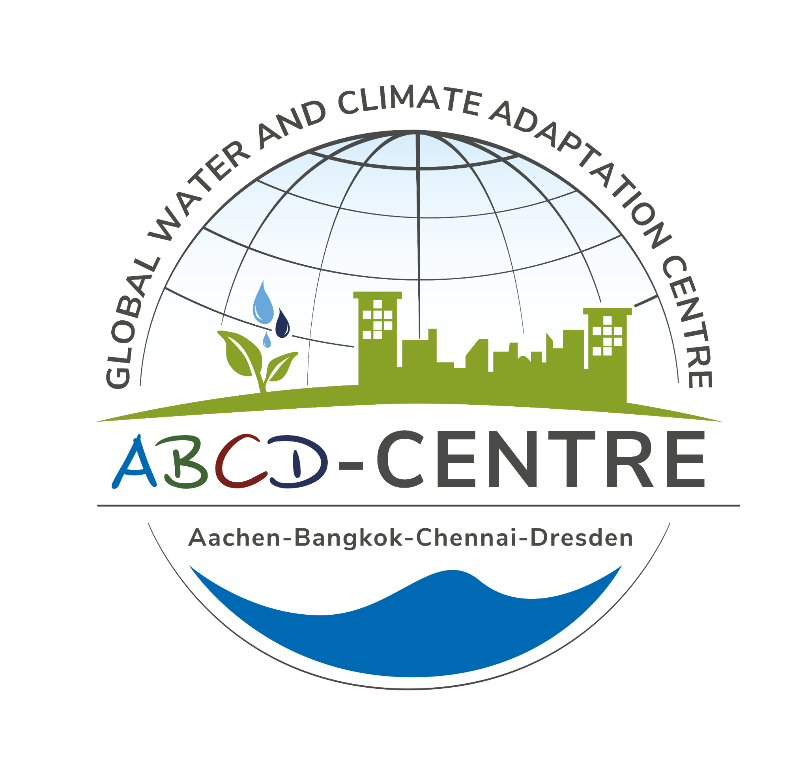
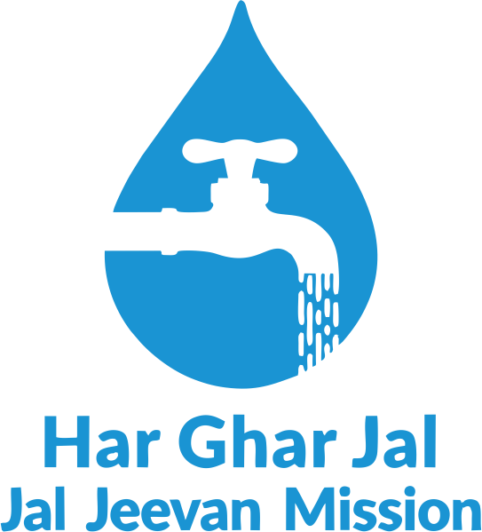
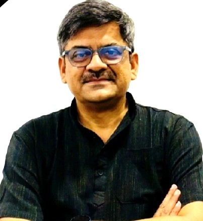

Securing Drinking Water for All: Strengthening Operation & Maintenance Systems for Sustainable and Climate-Resilient Drinking Water Services under the Jal Jeevan Mission (JJM) in India
This session will explore innovative, actionable pathways to strengthen and incentivise JJM O&M systems through improved service delivery, water quality, financial and source sustainability, local governance and regulatory measures.

About the Event
Access to safe and reliable drinking water is fundamental to human dignity, public health and sustainable development. Under the Jal Jeevan Mission (JJM), India has made significant investments in rural drinking water infrastructure, with the vision of providing safe and adequate drinking water to every rural household through functional tap connections. However, the long-term success of this ambitious programme depends not only on creating infrastructure but also on ensuring that drinking water systems remain functional, financially viable, inclusive and resilient to climate variability. Strengthening operation and maintenance (O&M) systems is therefore central to ensuring the long-term sustainability of rural drinking water services.
This requires a comprehensive approach that integrates technical systems with institutional capacity, community participation, financial planning, source sustainability and evidence-based decision-making. India’s experience under JJM offers important lessons on how government programmes, civil society organisations, technical institutions and local communities can work together to strengthen drinking water governance. Community-led approaches, locally grounded institutional mechanisms and innovative assessment tools can help identify gaps, improve accountability and support the transition towards sustainable service delivery.
Infrastructure to Functionality
Moving beyond physical tap construction toward dependable service levels, continuous water quality, and long-term reliability.
Community-Led Governance
Empowering Gram Panchayats and Village Water & Sanitation Committees (VWSCs) with financial and operational autonomy.
Climate & Source Resilience
Safeguarding aquifer and surface sources against depletion, erratic rainfall shocks, and seasonal water stresses.
Purpose of the Event
This virtual event will bring together practitioners, development organisations, researchers and sector experts to share experiences and identify actionable pathways for strengthening O&M systems and local water governance for sustainable rural drinking water services. The event will highlight innovative and community-led approaches that connect service delivery, water quality, financial sustainability, source protection and climate resilience. It will also explore how evidence, digital tools and institutional partnerships can strengthen planning, monitoring and accountability under JJM.
By drawing on experiences from India, the session aims to contribute to the global dialogue on achieving SDG 6: ensuring the availability and sustainable management of water and sanitation for all, with particular emphasis on the long-term functionality, reliability and resilience of rural drinking water systems.
Availability & Safety
Universal, affordable and safe drinking water for rural populations.
Operation & Maintenance
Institutionalised repair mechanisms, user fee viability, and asset longevity.
Digital & Evidence Tools
Evidence, digital tools and partnerships for planning, monitoring and accountability.
Global Policy Dialogue
Bringing India’s experience into the global dialogue on achieving SDG 6.
Moderator & Panelists
The 90-minute session will bring together experts representing research, civil society, water-sector organisations and community-led development initiatives.
Sarah Elser
Coordinator, Global Water and Climate Adaptation Centre (ABCD Centre), Technische Universität Dresden, Germany

Bishwadeep Ghose
Country Director, Water For People, India
Jal-Suraksha: Securing Rural Drinking Water Services
A Robust Operation & Maintenance Framework for the Jal Jeevan Mission at the Gram Panchayat
A practical framework for rural drinking water governance, outlining operational guidelines to move from asset construction to sustained service delivery across Gram Panchayats.
Registration: Virtual High-Level Session
Register below to receive the session joining link and calendar details by email.
Thank you for registering!
The joining link and calendar details will be sent to your email before the session.
Need help with registration? Call +91 98226 84182